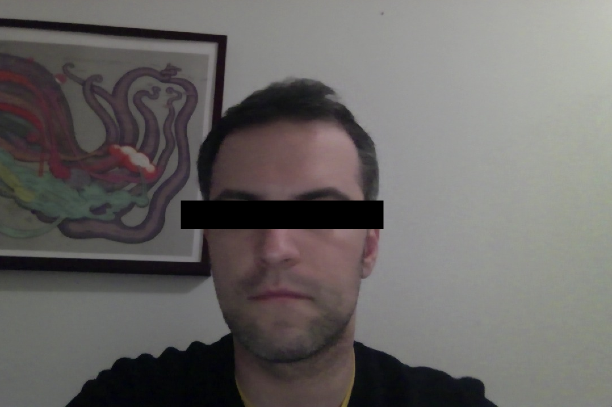

Result of 2f
I played around with the ellipse values to make the colors, positions and the widhts/heights of the ellipses diverse.
void setup(){
size(400,400);
ellipseMode(CORNER);
noStroke();
fill(128,9,255);
ellipse(50, 50, 100, 100);
ellipseMode(CORNER);
stroke(100,100,100);
fill(228,119,95);
ellipse(10, 10, 80, 90);
stroke(0,200,000);
fill(18,19,95);
ellipse(150, 150, 200, 50);
}
void draw(){
}
Result of 2i
I created a quad, a triangle, a rectangle and an ellipse to make the following result.
void setup(){
size(400,400);
noStroke();
fill(255,0,0);
quad(12, 45, 125, 58, 180, 157, 99, 200);
stroke(124,54,221);
fill(0,199,43);
triangle(305, 300, 222, 45, 117, 123);
stroke(156,154,0);
fill(0,56,122);
rect(200, 200, 140, 245);
stroke(255,254,200);
fill(160,86,212);
ellipse(124, 300, 200, 100);
}
void draw(){
}
Result of 2o
I made the x and y coordinates of the mouse the input values for the red and blue color inputs of the ellipse, and also for the third point of the triangle, which meant that the triangle "followed" the mouse.
float colorRed;
float colorBlue;
void setup(){
size(400,400);
frameRate(15);
background(200,200,200);
}
void draw(){
background(200,200,200);
colorRed = mouseX;
colorBlue = mouseY;
map(colorRed, 0, 400, 0, 255);
constrain(colorRed, 0, 255);
map(colorBlue, 0, 400, 0, 255);
constrain(colorBlue, 0, 255);
fill(colorRed, 0, colorBlue);
stroke(0,0,0);
ellipse(150, 150, 100, 100);
fill(128, 255, 120);
noStroke();
triangle(mouseX, mouseY, 100, 300, 250, 250);
}
Result of 3b
I was not able to use my camera input on my mac, despite trying out numerous solutions and bypassing permissions. I still got an error from processing (Target VM failed to initialize). I therefore worked with the default picture of the random person for the next exercises.
I decided to put the black bar over the person's eyes. I figured that the eyes are approximately in one third of a person's head, so I used that to calculate the y position of the black rectangle. I made the height 40, and I left the width to cover the person's entire face.

import gab.opencv.*;
import java.awt.Rectangle;
OpenCV opencv;
Rectangle[] faces;
void setup() {
opencv = new OpenCV(this, "test.jpg");
size(1080, 720);
opencv.loadCascade(OpenCV.CASCADE_FRONTALFACE);
faces = opencv.detect();
}
void draw() {
image(opencv.getInput(), 0, 0);
fill(0,0,0);
stroke(0, 0, 0);
strokeWeight(10);
for (int i = 0; i < faces.length; i++) {
rect(faces[i].x, faces[i].y + faces[i].height/3, faces[i].width, 40);
}
}
Result of 3d
I looked up a picture of a monocle to put over both eyes, and then calculated the approximate position and sizing of the image - which came up to approximately one fourth of the image's original size. I also changed the opencv cascade to find the individual eyes, and the result worked quite nicely.
import gab.opencv.*;
import java.awt.Rectangle;
PImage img;
OpenCV opencv;
Rectangle[] faces;
void setup() {
opencv = new OpenCV(this, "test.jpg");
img = loadImage("monocle.png");
size(1080, 720);
opencv.loadCascade(OpenCV.CASCADE_EYE);
faces = opencv.detect();
}
void draw() {
image(opencv.getInput(), 0, 0);
noFill();
stroke(0, 0, 0);
strokeWeight(10);
for (int i = 0; i < faces.length; i++) {
image(img, faces[i].x - img.width/5, faces[i].y, width/4, height/4);
}
}